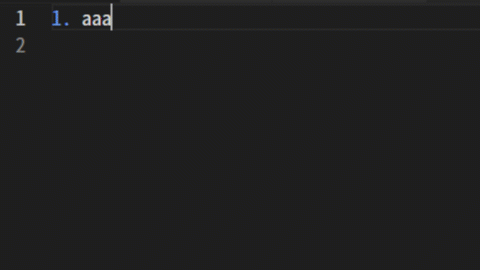

リストの機能¶
リストの作成方法、編集方法をまとめたページです。
このエクステンションでは、次の記号をサポートしています。 (他の書式でも、ビルドを行うことはできます)
記号 |
意味 |
|---|---|
|
段落番号 (直接数字を入力) |
|
段落番号 (ビルド時に数字に置き換え) |
|
箇条書き |

次の行の挿入¶
1行目を書き終えた後で、 Enter ボタンを押すと、次の行に新しい項目が追加されます( Shift + Enter で上の行に項目が追加されます)。
直接数字を入力する方式( 1. )の場合は、次の数字にインクリメントされた状態で挿入されます。

リストのネスト¶
リストの行にカーソルがある状態で、
Tabボタンを押すと、リストのネストを行うことができます。その際、リストの先頭の記号の選択肢が現れるので、いずれかの記号を選択します。
ネストされているリストの行で
Shift + Tabを押すと、ネストが解除されます。

番号の再構築¶
直接数字を入力する方式(
1.)のリストの場合、新しいリストの行を追加するタイミングで番号が再構築されます。(数字を順に並び替えます)一番先頭の番号は書き変わらないので、1以外の数値からのリストを作ることもできます。

Note
一部の書式で、数字の再構築が上手くいかない場合があるので、その時は手動で書き換えをお願いします。